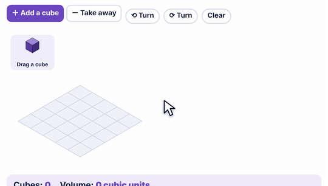

What it is
Volume is how many cubes fill a box. Each cube is 1 cubic unit.
Thinking in layers is the bridge to the formula. Length × width gives one layer. Height says how many layers.
How to use the tool
- Drag a cube from the tray onto a square to stack it.
- Drag the top cube off to take it away.
- Turn the view to see the back.
- Count the cubes. That is the volume.

Try this with your class
Build a box with exactly 24 cubes. How many different boxes can you make?
- Students find 4 × 3 × 2, 6 × 2 × 2, 6 × 4 × 1, 8 × 3 × 1 and more.
- For each one, write length × width × height.
- Ask: why does every box multiply to 24?
Watch for
Counting only the cubes you can see.Hidden cubes in the middle and back count too. Build it, then turn the view.
Volume vs. area.Area covers a flat surface. Volume fills a space. Units: cm² vs. cm³.
Jumping to the formula.Let students build and count first. The formula should explain what they already see.